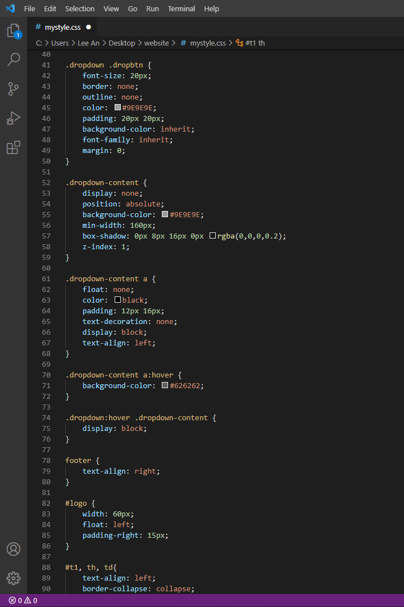

This website is created using HyperText Markup Language (HTML) and Cascading Style Sheets (CSS). HTML is used to define the structure and the content for the website while CSS is used to give style to the structure and content to make it look nice.
I learnt HTML and CSS from W3Schools and from Jake Wright's Youtube Web Development series.
This website serves to document my journey through my time in the elective EP1000. By documenting my journey, it will allow me to collect and archive what I have done during my projects and allow me to access or showcase them in a later date. This way I can refer to my website to revisit/relearn what I have picked up in this elective and allow me to refresh up on the skills I have previously developed.
| Learn HTML in 12 Minutes: | Learn More HTML in 12 Minutes: |
|---|---|
|  |
|---|
I used a dark colour palette for my website as I believe its easier on the eyes and more aesthetically pleasing. I used a Dark UI colour palatte I found here as reference.